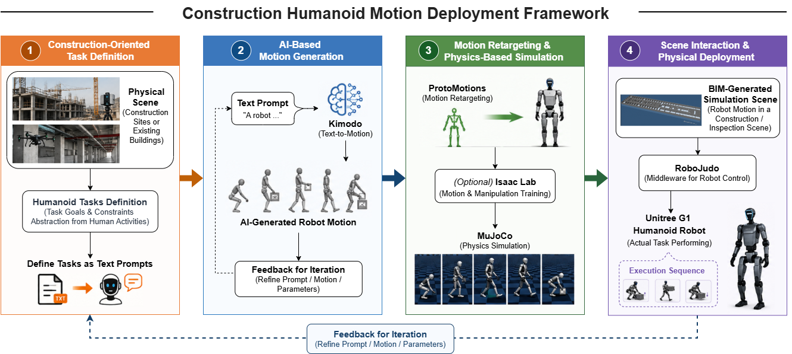
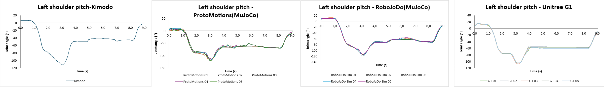
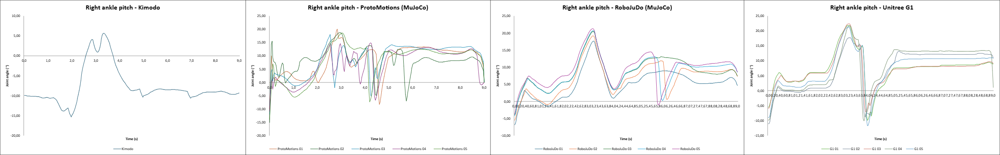
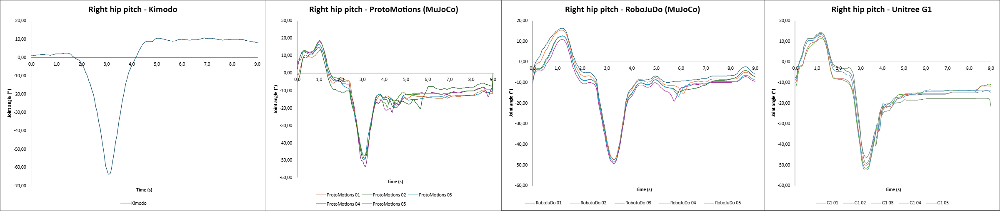

Humanoid robots have recently attracted significant attention as a promising automation technology for construction due to their ability to operate within human-designed environments and perform human-like movements. This capability creates an opportunity to extend robotic automation beyond highly structured, task-specific applications toward construction and building operation activities that remain largely dependent on human workers. However, their deployment in construction remains challenging because humanoid motion development must bridge various software and hardware systems while accounting for the physical constraints and spatial conditions of construction environments. This paper proposes a Construction Humanoid Motion Deployment Framework (CHMDF) that establishes an integrated simulation-to-reality (sim-to-real) workflow for developing construction-oriented humanoid motions. The framework connects construction-oriented task definition and BIM-based scene representation with AI-based motion generation, robot-specific motion adaptation, physics-based simulation, and physical robot execution. Unlike general-purpose humanoid motion pipelines, CHMDF incorporates construction activities and BIM-derived spatial information to contextualize motion development and evaluate humanoid behavior within representative built environments. The framework is implemented using Kimodo, ProtoMotions, MuJoCo, RoboJudo, and the Unitree G1 humanoid robot. A proof-of-concept demonstration, involving a construction-related obstacle-relocation motion and a wall-collision example, illustrates the workflow from motion generation and simulation-based evaluation to physical robot execution. The results provide an initial demonstration of the feasibility of the proposed workflow and its potential to support the systematic development and evaluation of humanoid motions for construction applications.




Please cite the paper as follows:
Xuling Ye, Wenyue Deng, Markus König, From AI Motion Generation to Real Humanoid Deployment: A Digital Workflow for Construction Robotics, ICCBEI 2027 (under review).